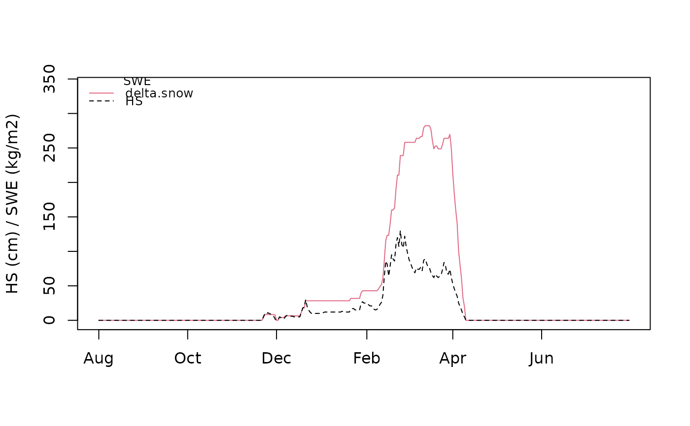

SWE modeling with the delta.snow process based model and several empirical regression models.
nixmass.RdSnow Water Equivalent (SWE) is modeled either exclusively from daily snow depth changes or statistically, depending on snow depth, elevation, date and climate class.
Usage
nixmass(
data,
model = c("delta.snow", "delta.snow.dyn_rho_max", "jo09", "pi16", "st10", "gu19"),
alt,
region.jo09,
region.gu19,
snowclass.st10,
layers = FALSE,
verbose = FALSE
)Arguments
- data
A data.frame with at least two columns named
dateandhs. They should contain date and corresponding daily observations of snow depth \(hs \ge 0\) measured at one site. The unit must be meters (m). No gaps or NA are allowed. Dates must be either of class `character`, `Date` or `POSIXct` and given in the formatYYYY-MM-DD. No sub-daily resolution is allowed at the moment (see details).- model
Defines model for SWE computation. Can be one, several or all of `delta.snow`, `delta.snow.dyn_rho_max`, `jo09`, `pi16`, `st10`, `gu19`. If no model is given, `delta.snow` will be taken.
- alt
Must be given in meter if one of model is `jo09`. Ignored otherwise.
- region.jo09
Must be given if one of model is `jo09`, ignored otherwise. This must be an integer number between 1 and 7 of the Swiss region where the station belongs to, according to Fig. 1 in the original reference.
- region.gu19
If model contains `gu19` this must be one of `italy`, `southwest`, `central` or `southeast` as described in the original reference. #' Ignored if model is not `gu19`.
- snowclass.st10
Must be given if one of model is `st10`. Must be one of the following character strings: `alpine`, `maritime`, `prairie`, `tundra`, `taiga` as outlined in the original reference. Ignored if model is not `st10`.
- layers
Logical. Should parameters snow depth, swe and age be returned layerwise?.
- verbose
Logical. Should additional information be given during runtime?
Value
A list of class nixmass with components:
- swe
Contains a list of numerical vectors. Each entry refers to SWE values computed with the selected model(s).
- date
Vector of date strings in the input class of format
YYYY-MM-DD.- hs
Vector of given snow depth values used to compute SWE.
Details
nixmass This function is a wrapper for the computation of SWE with different models.
The process based model delta.snow
can be chosen in its original formulation (Winkler et al. 20219) and with a dynamically
increasing maximum bulk snow density (Schroeder et al., 2024), as well as different empirical regression models of
Jonas,Pistocchi, Sturm and Guyennon.
For the `delta.snow` models and the ones of `Pistocchi` and `Guyennon`,
the needed parameters and coefficients from the original references are set as default.
They can however be changed according to results from other datasets.
For the other models of `Jonas` and `Sturm` regression coefficients are fixed.
Computation is quite fast and there does not exist any restriction regarding the length of the data. However, if many years have to be modeled at once, it is recommended to split the computation into single years, separated by zero snow depth values.
References
Guyennon, N., Valt, M., Salerno, F., Petrangeli, A., Romano, E. (2019) 'Estimating the snow water equivalent from snow depth measurements in the Italian Alps', Cold Regions Science and Technology. Elsevier, 167 (August), p. 102859. doi: 10.1016/j.coldregions.2019.102859.
Jonas, T., Marty, C. and Magnusson, J. (2009) "Estimating the snow water equivalent from snow depth measurements in the Swiss Alps"", Journal of Hydrology, 378(1 - 2), pp. 161 - 167. doi: 10.1016/j.jhydrol.2009.09.021.
Pistocchi, A. (2016) "Simple estimation of snow density in an Alpine region", Journal of Hydrology: Regional Studies. Elsevier B.V., 6(Supplement C), pp. 82 - 89. doi: 10.1016/j.ejrh.2016.03.004.
Sturm, M. et al. (2010) "Estimating Snow Water Equivalent Using Snow Depth Data and Climate Classes", Journal of Hydrometeorology, 11(6), pp. 1380 - 1394. doi: 10.1175/2010JHM1202.1.
Winkler, M., Schellander, H., and Gruber, S.: Snow water equivalents exclusively from snow depths and their temporal changes: the delta.snow model, Hydrol. Earth Syst. Sci., 25, 1165-1187, doi: 10.5194/hess-25-1165-2021, 2021.
Schroeder, M.et al. (2024) "CONTINUOUS SNOW WATER EQUIVALENT MONITORING ON GLACIERS USING COSMIC RAY NEUTRON SENSOR TECHNOLOGY A CASE STUDY ON HINTEREISFERNER, AUSTRIA", Proceedings: International Snow Science Workshop 2024, Tromsø, Norway, 1107 - 1114
Examples
# Load example data with realistic snow depth values
# from a station at 600 meters in the northern Alps
# Note that the winter season is set to an arbitrary date
# to mask its origin
data("hsdata")
o <- nixmass(hsdata, model="delta.snow",verbose=TRUE)
#> Using parameters:
#> rho.max rho.null c.ov k.ov k tau
#> 4.012588e+02 8.119417e+01 5.104722e-04 3.785674e-01 2.993175e-02 2.362476e-02
#> eta.null timestep
#> 8.523356e+06 2.400000e+01
#> day 1 (1900-08-01):
#> day 2 (1900-08-02):
#> day 3 (1900-08-03):
#> day 4 (1900-08-04):
#> day 5 (1900-08-05):
#> day 6 (1900-08-06):
#> day 7 (1900-08-07):
#> day 8 (1900-08-08):
#> day 9 (1900-08-09):
#> day 10 (1900-08-10):
#> day 11 (1900-08-11):
#> day 12 (1900-08-12):
#> day 13 (1900-08-13):
#> day 14 (1900-08-14):
#> day 15 (1900-08-15):
#> day 16 (1900-08-16):
#> day 17 (1900-08-17):
#> day 18 (1900-08-18):
#> day 19 (1900-08-19):
#> day 20 (1900-08-20):
#> day 21 (1900-08-21):
#> day 22 (1900-08-22):
#> day 23 (1900-08-23):
#> day 24 (1900-08-24):
#> day 25 (1900-08-25):
#> day 26 (1900-08-26):
#> day 27 (1900-08-27):
#> day 28 (1900-08-28):
#> day 29 (1900-08-29):
#> day 30 (1900-08-30):
#> day 31 (1900-08-31):
#> day 32 (1900-09-01):
#> day 33 (1900-09-02):
#> day 34 (1900-09-03):
#> day 35 (1900-09-04):
#> day 36 (1900-09-05):
#> day 37 (1900-09-06):
#> day 38 (1900-09-07):
#> day 39 (1900-09-08):
#> day 40 (1900-09-09):
#> day 41 (1900-09-10):
#> day 42 (1900-09-11):
#> day 43 (1900-09-12):
#> day 44 (1900-09-13):
#> day 45 (1900-09-14):
#> day 46 (1900-09-15):
#> day 47 (1900-09-16):
#> day 48 (1900-09-17):
#> day 49 (1900-09-18):
#> day 50 (1900-09-19):
#> day 51 (1900-09-20):
#> day 52 (1900-09-21):
#> day 53 (1900-09-22):
#> day 54 (1900-09-23):
#> day 55 (1900-09-24):
#> day 56 (1900-09-25):
#> day 57 (1900-09-26):
#> day 58 (1900-09-27):
#> day 59 (1900-09-28):
#> day 60 (1900-09-29):
#> day 61 (1900-09-30):
#> day 62 (1900-10-01):
#> day 63 (1900-10-02):
#> day 64 (1900-10-03):
#> day 65 (1900-10-04):
#> day 66 (1900-10-05):
#> day 67 (1900-10-06):
#> day 68 (1900-10-07):
#> day 69 (1900-10-08):
#> day 70 (1900-10-09):
#> day 71 (1900-10-10):
#> day 72 (1900-10-11):
#> day 73 (1900-10-12):
#> day 74 (1900-10-13):
#> day 75 (1900-10-14):
#> day 76 (1900-10-15):
#> day 77 (1900-10-16):
#> day 78 (1900-10-17):
#> day 79 (1900-10-18):
#> day 80 (1900-10-19):
#> day 81 (1900-10-20):
#> day 82 (1900-10-21):
#> day 83 (1900-10-22):
#> day 84 (1900-10-23):
#> day 85 (1900-10-24):
#> day 86 (1900-10-25):
#> day 87 (1900-10-26):
#> day 88 (1900-10-27):
#> day 89 (1900-10-28):
#> day 90 (1900-10-29):
#> day 91 (1900-10-30):
#> day 92 (1900-10-31):
#> day 93 (1900-11-01):
#> day 94 (1900-11-02):
#> day 95 (1900-11-03):
#> day 96 (1900-11-04):
#> day 97 (1900-11-05):
#> day 98 (1900-11-06):
#> day 99 (1900-11-07):
#> day 100 (1900-11-08):
#> day 101 (1900-11-09):
#> day 102 (1900-11-10):
#> day 103 (1900-11-11):
#> day 104 (1900-11-12):
#> day 105 (1900-11-13):
#> day 106 (1900-11-14):
#> day 107 (1900-11-15):
#> day 108 (1900-11-16):
#> day 109 (1900-11-17):
#> day 110 (1900-11-18):
#> day 111 (1900-11-19):
#> day 112 (1900-11-20):
#> day 113 (1900-11-21):
#> day 114 (1900-11-22): produce layer 1
#> day 115 (1900-11-23): create new layer 2
#> day 116 (1900-11-24): scaling:
#> day 117 (1900-11-25): scaling:
#> day 118 (1900-11-26): scaling:
#> day 119 (1900-11-27): scaling:
#> day 120 (1900-11-28): scaling:
#> day 121 (1900-11-29): scaling:
#> day 122 (1900-11-30): drenching: melt no further compaction runoff
#> day 123 (1900-12-01): runoff
#> day 124 (1900-12-02):
#> day 125 (1900-12-03): produce layer 1
#> day 126 (1900-12-04): scaling:
#> day 127 (1900-12-05): scaling:
#> day 128 (1900-12-06): scaling:
#> day 129 (1900-12-07): create new layer 2
#> day 130 (1900-12-08): scaling:
#> day 131 (1900-12-09): scaling:
#> day 132 (1900-12-10): scaling:
#> day 133 (1900-12-11): scaling:
#> day 134 (1900-12-12): scaling:
#> day 135 (1900-12-13): scaling:
#> day 136 (1900-12-14): scaling:
#> day 137 (1900-12-15): scaling:
#> day 138 (1900-12-16): scaling:
#> day 139 (1900-12-17): scaling:
#> day 140 (1900-12-18): create new layer 3
#> day 141 (1900-12-19): create new layer 4
#> day 142 (1900-12-20): scaling:
#> day 143 (1900-12-21): create new layer 5
#> day 144 (1900-12-22): drenching: melt compaction
#> day 145 (1900-12-23): drenching: melt compaction
#> day 146 (1900-12-24): drenching: melt compaction
#> day 147 (1900-12-25): scaling:
#> day 148 (1900-12-26): scaling:
#> day 149 (1900-12-27): scaling:
#> day 150 (1900-12-28): scaling:
#> day 151 (1900-12-29): scaling:
#> day 152 (1900-12-30): scaling:
#> day 153 (1900-12-31): scaling:
#> day 154 (1901-01-01): scaling:
#> day 155 (1901-01-02): scaling:
#> day 156 (1901-01-03): scaling:
#> day 157 (1901-01-04): scaling:
#> day 158 (1901-01-05): scaling:
#> day 159 (1901-01-06): scaling:
#> day 160 (1901-01-07): scaling:
#> day 161 (1901-01-08): scaling:
#> day 162 (1901-01-09): scaling:
#> day 163 (1901-01-10): scaling:
#> day 164 (1901-01-11): scaling:
#> day 165 (1901-01-12): scaling:
#> day 166 (1901-01-13): scaling:
#> day 167 (1901-01-14): scaling:
#> day 168 (1901-01-15): scaling:
#> day 169 (1901-01-16): scaling:
#> day 170 (1901-01-17): scaling:
#> day 171 (1901-01-18): scaling:
#> day 172 (1901-01-19): scaling:
#> day 173 (1901-01-20): scaling:
#> day 174 (1901-01-21): create new layer 6
#> day 175 (1901-01-22): scaling:
#> day 176 (1901-01-23): scaling:
#> day 177 (1901-01-24): scaling:
#> day 178 (1901-01-25): scaling:
#> day 179 (1901-01-26): scaling:
#> day 180 (1901-01-27): scaling:
#> day 181 (1901-01-28): create new layer 7
#> day 182 (1901-01-29): create new layer 8
#> day 183 (1901-01-30): scaling:
#> day 184 (1901-01-31): scaling:
#> day 185 (1901-02-01): scaling:
#> day 186 (1901-02-02): scaling:
#> day 187 (1901-02-03): scaling:
#> day 188 (1901-02-04): scaling:
#> day 189 (1901-02-05): scaling:
#> day 190 (1901-02-06): drenching: melt compaction
#> day 191 (1901-02-07): scaling:
#> day 192 (1901-02-08): scaling:
#> day 193 (1901-02-09): create new layer 9
#> day 194 (1901-02-10): create new layer 10
#> day 195 (1901-02-11): create new layer 11
#> day 196 (1901-02-12): create new layer 12
#> day 197 (1901-02-13): create new layer 13
#> day 198 (1901-02-14): create new layer 14
#> day 199 (1901-02-15): create new layer 15
#> day 200 (1901-02-16): drenching: melt compaction
#> day 201 (1901-02-17): create new layer 16
#> day 202 (1901-02-18): create new layer 17
#> day 203 (1901-02-19): scaling:
#> day 204 (1901-02-20): create new layer 18
#> day 205 (1901-02-21): create new layer 19
#> day 206 (1901-02-22): create new layer 20
#> day 207 (1901-02-23): drenching: melt compaction
#> day 208 (1901-02-24): create new layer 21
#> day 209 (1901-02-25): drenching: melt compaction
#> day 210 (1901-02-26): scaling:
#> day 211 (1901-02-27): create new layer 22
#> day 212 (1901-02-28): drenching: melt compaction
#> day 213 (1901-03-01): drenching: melt compaction
#> day 214 (1901-03-02): drenching: melt compaction
#> day 215 (1901-03-03): drenching: melt compaction
#> day 216 (1901-03-04): drenching: melt compaction
#> day 217 (1901-03-05): drenching: melt compaction
#> day 218 (1901-03-06): drenching: melt compaction
#> day 219 (1901-03-07): create new layer 23
#> day 220 (1901-03-08): scaling:
#> day 221 (1901-03-09): scaling:
#> day 222 (1901-03-10): create new layer 24
#> day 223 (1901-03-11): drenching: melt compaction
#> day 224 (1901-03-12): create new layer 25
#> day 225 (1901-03-13): create new layer 26
#> day 226 (1901-03-14): drenching: melt compaction
#> day 227 (1901-03-15): drenching: melt compaction
#> day 228 (1901-03-16): scaling:
#> day 229 (1901-03-17): drenching: melt no further compaction runoff
#> day 230 (1901-03-18): drenching: melt no further compaction runoff
#> day 231 (1901-03-19): drenching: melt no further compaction runoff
#> day 232 (1901-03-20): create new layer 27
#> day 233 (1901-03-21): drenching: melt compaction
#> day 234 (1901-03-22): scaling: runoff
#> day 235 (1901-03-23): scaling:
#> day 236 (1901-03-24): scaling:
#> day 237 (1901-03-25): create new layer 28
#> day 238 (1901-03-26): create new layer 29
#> day 239 (1901-03-27): drenching: melt compaction
#> day 240 (1901-03-28): drenching: melt compaction
#> day 241 (1901-03-29): scaling:
#> day 242 (1901-03-30): create new layer 30
#> day 243 (1901-03-31): drenching: melt no further compaction runoff
#> day 244 (1901-04-01): drenching: melt no further compaction runoff
#> day 245 (1901-04-02): drenching: melt no further compaction runoff
#> day 246 (1901-04-03): drenching: melt no further compaction runoff
#> day 247 (1901-04-04): drenching: melt no further compaction runoff
#> day 248 (1901-04-05): drenching: melt no further compaction runoff
#> day 249 (1901-04-06): drenching: melt no further compaction runoff
#> day 250 (1901-04-07): drenching: melt no further compaction runoff
#> day 251 (1901-04-08): drenching: melt no further compaction runoff
#> day 252 (1901-04-09): drenching: melt no further compaction runoff
#> day 253 (1901-04-10): runoff
#> day 254 (1901-04-11):
#> day 255 (1901-04-12):
#> day 256 (1901-04-13):
#> day 257 (1901-04-14):
#> day 258 (1901-04-15):
#> day 259 (1901-04-16):
#> day 260 (1901-04-17):
#> day 261 (1901-04-18):
#> day 262 (1901-04-19):
#> day 263 (1901-04-20):
#> day 264 (1901-04-21):
#> day 265 (1901-04-22):
#> day 266 (1901-04-23):
#> day 267 (1901-04-24):
#> day 268 (1901-04-25):
#> day 269 (1901-04-26):
#> day 270 (1901-04-27):
#> day 271 (1901-04-28):
#> day 272 (1901-04-29):
#> day 273 (1901-04-30):
#> day 274 (1901-05-01):
#> day 275 (1901-05-02):
#> day 276 (1901-05-03):
#> day 277 (1901-05-04):
#> day 278 (1901-05-05):
#> day 279 (1901-05-06):
#> day 280 (1901-05-07):
#> day 281 (1901-05-08):
#> day 282 (1901-05-09):
#> day 283 (1901-05-10):
#> day 284 (1901-05-11):
#> day 285 (1901-05-12):
#> day 286 (1901-05-13):
#> day 287 (1901-05-14):
#> day 288 (1901-05-15):
#> day 289 (1901-05-16):
#> day 290 (1901-05-17):
#> day 291 (1901-05-18):
#> day 292 (1901-05-19):
#> day 293 (1901-05-20):
#> day 294 (1901-05-21):
#> day 295 (1901-05-22):
#> day 296 (1901-05-23):
#> day 297 (1901-05-24):
#> day 298 (1901-05-25):
#> day 299 (1901-05-26):
#> day 300 (1901-05-27):
#> day 301 (1901-05-28):
#> day 302 (1901-05-29):
#> day 303 (1901-05-30):
#> day 304 (1901-05-31):
#> day 305 (1901-06-01):
#> day 306 (1901-06-02):
#> day 307 (1901-06-03):
#> day 308 (1901-06-04):
#> day 309 (1901-06-05):
#> day 310 (1901-06-06):
#> day 311 (1901-06-07):
#> day 312 (1901-06-08):
#> day 313 (1901-06-09):
#> day 314 (1901-06-10):
#> day 315 (1901-06-11):
#> day 316 (1901-06-12):
#> day 317 (1901-06-13):
#> day 318 (1901-06-14):
#> day 319 (1901-06-15):
#> day 320 (1901-06-16):
#> day 321 (1901-06-17):
#> day 322 (1901-06-18):
#> day 323 (1901-06-19):
#> day 324 (1901-06-20):
#> day 325 (1901-06-21):
#> day 326 (1901-06-22):
#> day 327 (1901-06-23):
#> day 328 (1901-06-24):
#> day 329 (1901-06-25):
#> day 330 (1901-06-26):
#> day 331 (1901-06-27):
#> day 332 (1901-06-28):
#> day 333 (1901-06-29):
#> day 334 (1901-06-30):
#> day 335 (1901-07-01):
#> day 336 (1901-07-02):
#> day 337 (1901-07-03):
#> day 338 (1901-07-04):
#> day 339 (1901-07-05):
#> day 340 (1901-07-06):
#> day 341 (1901-07-07):
#> day 342 (1901-07-08):
#> day 343 (1901-07-09):
#> day 344 (1901-07-10):
#> day 345 (1901-07-11):
#> day 346 (1901-07-12):
#> day 347 (1901-07-13):
#> day 348 (1901-07-14):
#> day 349 (1901-07-15):
#> day 350 (1901-07-16):
#> day 351 (1901-07-17):
#> day 352 (1901-07-18):
#> day 353 (1901-07-19):
#> day 354 (1901-07-20):
#> day 355 (1901-07-21):
#> day 356 (1901-07-22):
#> day 357 (1901-07-23):
#> day 358 (1901-07-24):
#> day 359 (1901-07-25):
#> day 360 (1901-07-26):
#> day 361 (1901-07-27):
#> day 362 (1901-07-28):
#> day 363 (1901-07-29):
#> day 364 (1901-07-30):
#> day 365 (1901-07-31):
plot(o)
#> Warning: OS reports request to set locale to "English" cannot be honored

o1 <- nixmass(hsdata, alt=600, region.jo09=6, region.gu19 = "central",
snowclass.st10 = "alpine", verbose = FALSE)
plot(o1)
#> Warning: OS reports request to set locale to "English" cannot be honored
summary(o1)
#> Min. 1st Qu. Median Mean 3rd Qu. Max.
#> 0.00000 0.00000 0.00000 38.58482 28.34948 282.25331
swe <- nixmass(hsdata, alt = 1000, region.jo09=1, snowclass.st10 = "tundra", region.gu19 = "italy")
summary(swe)
#> Min. 1st Qu. Median Mean 3rd Qu. Max.
#> 0.00000 0.00000 0.00000 38.58482 28.34948 282.25331